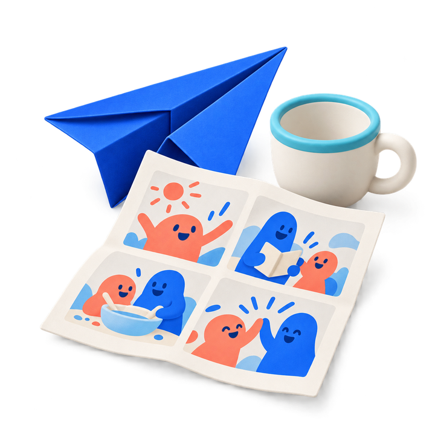
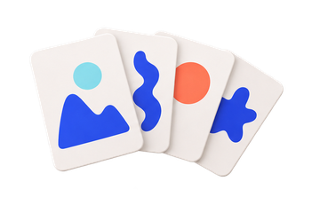
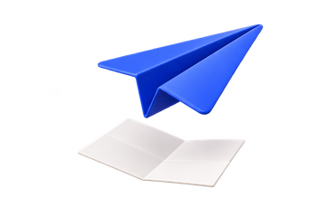
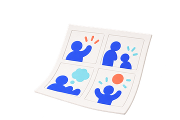

Choose what can wait.
Select apps with Apple’s Screen Time picker. Pause access, hide or shield selected apps, set a schedule, or add a usage threshold reminder.
A little space, every day
Thoughtful Screen Time controls and shared family plans. A little structure, so the rest of your day can breathe.
A week with intention
Make room for a good week.

Our week

Read togetherA chapter, a conversation

Make somethingPaper, ideas, a little imagination

Draw a comicA few frames, a new story
A gentler daily rhythm
Use Still on your own, or make a plan together as a family. Start with what your day actually needs.
Select apps with Apple’s Screen Time picker. Pause access, hide or shield selected apps, set a schedule, or add a usage threshold reminder.
Use optional Pro tools to give personal goals a next step, or create shared family plans, agreements, tasks, and reflections.
Children can take part in family tasks and plans. A parent’s saved change and a child device’s applied change have distinct states.
A little breathing room for the next thing you want to do.
For your own day
Create a quiet pocket for the things you choose. Free device controls work on their own; optional planning tools help you turn a goal into manageable steps.
Explore the basicsRoom to begin
Device controls are part of the free experience. Pro adds a separate set of planning tools.
The tools for managing device access, with no Pro purchase required.
Independent tools for the things you want to make time for.
Purchases are offered to adults only. Children have no purchase entry. Apple handles any in-app purchase; current terms and prices appear in the app.
A quieter kind of app
Still has no separate account to create and no developer-operated server. Family sharing uses Apple’s private CloudKit sharing.
Read the privacy policyFind clear answers about setup, family sharing, and your data.